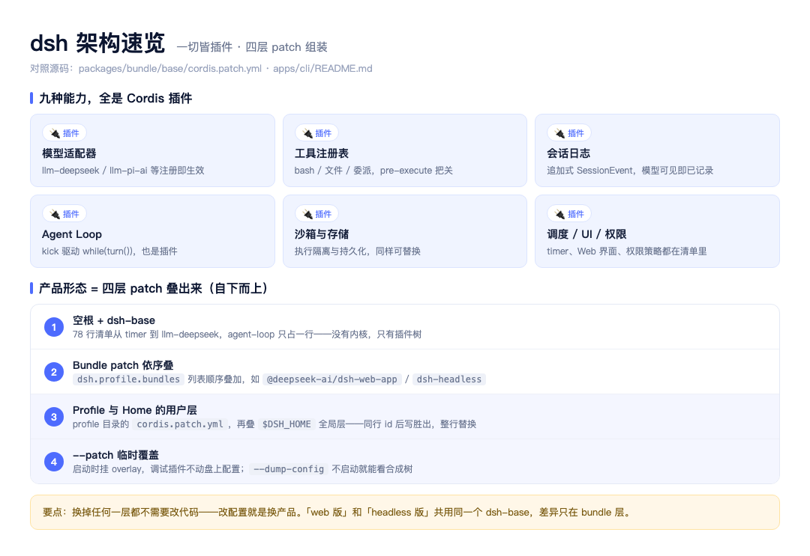
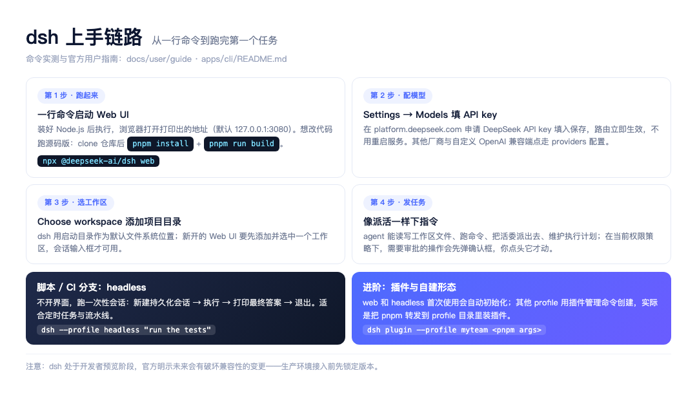
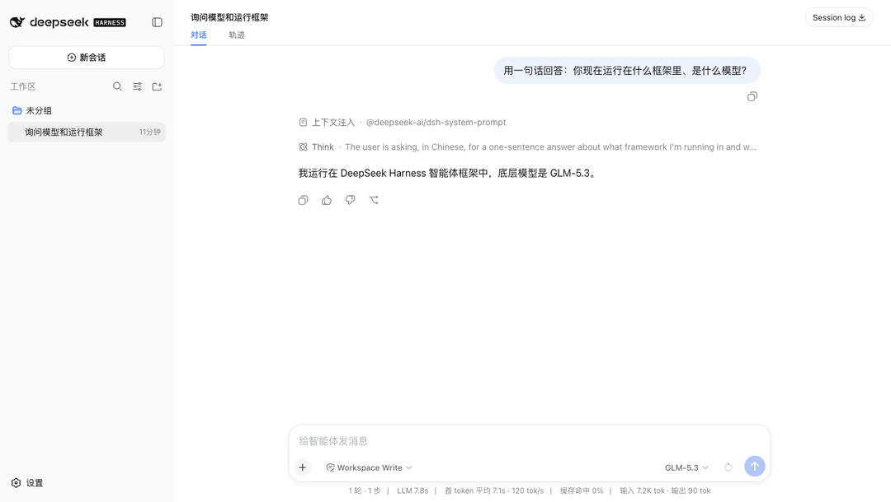
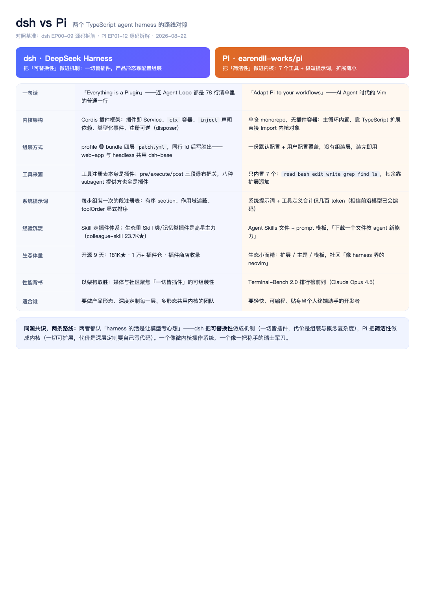

大家好我是郑同学。dsh 源码篇十集拆完了它的内部实现，这个系列面向另一批读者：没读过源码、只想直接上手用的人。DeepSeek Harness 是 DeepSeek 官方开源的 agent 框架，2026-08-13 上线，到今天 9 天，GitHub 181,583 星，带 dsh-plugin 标签的插件仓库已经 10,395 个。这篇回答三个问题：它是什么、怎么在十分钟里跑起来、生态里有什么能直接拿来用的。
● ● ●
先解释 harness 这个词。agent 等于模型加 harness：模型负责想（推理、写代码、做决策），harness 负责做（读写文件、执行命令、把关权限、记住会话）——是套在模型外面的一圈工程设施。dsh 就是 DeepSeek 开源的这一圈设施。
它的特别之处只有一句话：这圈设施里的每一样东西，都是插件。模型适配器、工具注册表、会话日志、Agent Loop、沙箱、存储、调度、UI、权限策略，没有一样焊死在内核里。支撑这一切的是 Cordis——一个 TypeScript 插件框架，聊天机器人框架 Koishi 的同源内核，设计有正式论文。插件即 Service 对象，声明依赖、注册能力、卸载自动清理。
证据在 dsh-base 的清单文件里：78 行 cordis.patch.yml，从 timer 到 llm-deepseek 挨个挂载，驱动整个 agent 的 Agent Loop 在里面就是普通的一行。没有内核，只有插件树。

图1：dsh 架构速览
产品形态靠四层 patch 叠出来：空根之上先按 dsh.profile.bundles 的顺序叠 bundle 层，再叠 profile 目录的用户层、全局层，启动时还能挂临时覆盖层。同行 id 后写胜出，整行替换。改配置就是换产品：web 版和 headless 版共用同一个 dsh-base，差异只在 bundle 层。想不启动就看合成结果，--dump-config 直接打印整棵树。
这段不是文档修辞，启动器自己就是这么介绍的。本机实测 npx @deepseek-ai/dsh --help，输出第一句：
dsh: boot a DeepSeek Harness profile — an ordered stack of
plugin-bundle patch layers under your own overrides.
翻译过来：dsh 启动的是一个 profile——一叠按顺序排好、压在你个人覆盖层之下的插件补丁层。帮助输出里还给了两个后面要用的信息：--patch 可以重复挂多个 overlay，plugin 子命令把剩余参数转发给 pnpm 在 profile 目录里装插件。
一个要先说清的状态：dsh 处于开发者预览阶段，官方明示未来会有破坏兼容性的变更。尝鲜随意，生产接入先锁版本。
● ● ●
上手不需要读源码。装好 Node.js，一行命令：
npx @deepseek-ai/dsh web
命令会启动 Web UI 并打印地址，默认 http://127.0.0.1:3080。想改代码跑源码版，clone 仓库后 pnpm install、pnpm run build，再 pnpm dsh web。

图2：dsh 上手链路
界面起来之后是四步。第一步已经在上面完成了。第二步配模型：Settings → Models，填入 platform.deepseek.com 申请的 DeepSeek API key 保存，路由立即生效，不用重启服务；其他厂商和自定义 OpenAI 兼容端点走 providers 配置，下一篇专门拆。第三步选工作区：dsh 用启动目录作为默认文件系统位置，新开的 Web UI 要先添加并选中一个工作区目录，会话输入框才可用。第四步发任务：像派活一样下指令，比如让它「总结这个仓库、找出主要包」。agent 能读写工作区文件、跑命令、把活委派出去、维护执行计划；在权限策略下，需要审批的操作会先弹确认框，你点头它才动。

图3：dsh Web UI 实测界面
上面是我本机的实测界面：输入框上方的模型选择器挂的是 GLM-5.3——自定义 provider 走 Anthropic 协议接进来的一次真实会话，headless 模式跑同一条链路也通。界面上每次有会话都会自动起标题、进左侧列表，headless 跑完的会话同样出现在里面，事后可翻。
不开界面也有分支。headless 模式跑一次性会话：新建持久化会话、执行、打印最终答案、退出，适合定时任务和 CI 流水线：
dsh --profile headless "run the tests"
两个使用层面的细节值得知道。一是会话是持久化的：headless 跑完的会话也存在盘上，事后能回去翻当时做了什么，出问题的流水线不至于黑盒。二是权限策略是插件：默认策略下危险操作弹确认，团队场景可以把策略插件换成「白名单内自动放行、白名单外直接拒绝」，这套开关和模型、工具一样从清单里换。
● ● ●
用别人的 dsh 是使用，给 dsh 挂自己的能力是插件，门槛低到只差一个函数。插件就是一个 TypeScript 模块，导出一个 apply 函数，框架加载时把 ctx 上下文传进来，你往上面注册能力：
import type { Context } from '@deepseek-ai/cordis'
export const name = 'hello-plugin'
export function apply(ctx: Context) {
// 依赖就绪后框架才会调 apply
console.log('[hello-plugin] plugin loaded!')
}
加载它不用改任何源码。写一个 overlay 文件，用 insert 把本地插件插进清单，启动时挂上：
- insert:
- id: hello
name: '/absolute/path/to/scratch-plugin/src/my-plugin.ts'
pnpm dsh web --patch ./scratch-plugin/cordis.yml
刷新页面，终端里就会打出那行 loaded。注意插件路径必须是绝对路径——patch 文件只贡献配置，不改变模块解析的基准目录。
清理是自动的。通过 ctx 注册的东西——事件监听、工具、定时器——插件卸载时框架统一回收，不用手动 removeListener；网络连接这类需要显式收尾的资源，用 ctx.effect() 交出 disposer，卸载时框架替你调。装别人的插件更简单，dsh plugin --profile 后面接 pnpm 参数，实际是把包管理转发到 profile 目录里执行。
● ● ●
一个框架上线 9 天攒 18 万星不稀奇，稀奇的是生态跟着一起长起来了：topic:dsh-plugin 标签下 10,395 个仓库，社区还做了插件商店（dsh.deepseek404.com）收录全量。
图4：dsh 生态地图
高星插件按用途看，几类最猛：
| 插件 | 星数 | 干什么 |
|---|---|---|
| nexu-io/open-design | 90,187 | 设计工作台 |
| ruvnet/ruflo | 68,661 | 多智能体编排 |
| esengine/DeepSeek-Reasonix | 35,015 | DeepSeek 原生终端编码 agent |
| volcengine/OpenViking | 31,692 | 自进化上下文数据库（火山引擎） |
| titanwings/colleague-skill | 23,748 | 「数字生命」skill，中文圈爆火 |
| anywhere-labs/…-desktop | 17,620 | dsh 桌面端，桌面本身也是插件 |
两个观察。一是Skill 类和记忆类是高星主力——生态在往「给 agent 加经验和记忆」的方向长，和把做法写成文件、按需加载的思路完全同路。二是大厂进场了：火山引擎的上下文数据库直接以插件形态接入，说明「插件」这个接口正在变成 agent 生态的通用插槽。
一万多个仓库怎么挑，给三条筛选标准。一看更新时间：dsh 自己还在开发者预览阶段、明示会有破坏性变更，三个月没跟版本的插件大概率已经接不上当前内核。二看它挂在哪一层：改提示词、加工具的插件最稳；换 Agent Loop、动会话日志的插件影响面大，升级时最先断。三看它依赖谁：只依赖 cordis 上下文 API 的插件比深度耦合 dsh 内部模块的活得久。
学习资源同步列一下：菜鸟教程有带架构图解的社区插件页，知乎有实现原理解析和 11 个热门插件推荐，CSDN 有保姆级教程，腾讯云开发者有 Profile × Bundle 组合解读，DEV.to 有配视频的插件开发实操。官方渠道是 GitHub Discussions，README 里挂着企微群和团队公众号的入群二维码，给插件仓库打上 dsh-plugin 标签就能被商店发现。
● ● ●
常被问到 dsh 和 Pi 怎么选。两个都是 TypeScript 写的 agent harness，都信「harness 只做执行设施、让模型专心想」，路线相反：dsh 把可替换性做进机制，一切皆插件、配置组装产品形态，代价是概念多一层；Pi 把简洁性做进内核，只内置 7 个工具、系统提示词几百 token，Terminal-Bench 2.0 打进前列，代价是深层定制要自己写代码。一句话选型：要做产品形态、深度定制每一层，选 dsh；要轻快贴身的个人终端助手，选 Pi。

图5：dsh vs Pi
● ● ●
npx @deepseek-ai/dsh web，配好 key 发一个任务，感受权限确认和工作区边界。dsh plugin 装进 profile，重启即生效。下一篇拆 providers 配置：怎么给 dsh 接任意模型、自定义 OpenAI 兼容端点，以及多模型并存时的路由规则。
素材：README.zh.md（运行命令/社区入口）、docs/user/guide/index.md（Web UI 四步）、apps/cli/README.md（profile 组装四层/CLI 模式/dsh plugin）、docs/user/develop/basic/index.md（hello-plugin 与 overlay 全文）、packages/bundle/base/cordis.patch.yml（78 行清单）；实测：本机 npx @deepseek-ai/dsh --help 启动器输出（2026-08-22）+ GitHub API（181,583★/19,879 fork/10,395 个 dsh-plugin 仓库）；Pi 对照：pi.dev 与 earendil-works/pi 公开资料 + Pi 源码篇已验证锚点。